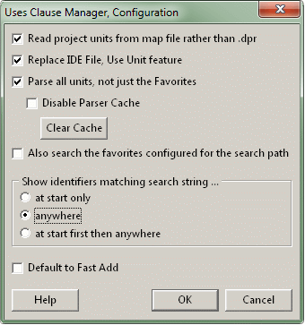

Uses Clause ManagerConfiguration (Options) |
  
|
Uses Clause ManagerConfiguration (Options) |
|
this page .. |
see also .. |
|---|---|
General |
|
|
|
|
|
Overview |
|
The "Uses Clause Manager" expert has some additional configuration options available from the GExperts configuration dialog:

Details |
|
The following settings are available:
▪Read project units from map file rather than .dpr - If activated, the Project tab will be filled with units read from the project's map file. This requires that map file is being created.Turn this on in the linker setting in the project options.
▪Replace IDE file, Use Unit feature - The menu item Use Unit in the file menu of the IDE will open the Uses Clause Manager.
▪Parse all units, not just the Favorites - The parser that fills the Identifier page will not just read the units listed on the Favorites tab but all units in the search path.
oDisable Parser Cache - The parser will always run when the Uses Clause Manager expert is opened. Note, that filling the Identifier list will take much longer in this case.
oClear Cache - Allows to clear the parser cache, forcing the parser to process all the files again next time the Uses Clause Manager expert is opened.
▪Also search the favorites configured in the search path - Refers to the favorites configured for the Edit Path expert (Delphi 2009 and later) and Search Path enhancement (all Delphi versions).
▪Show identifiers matching search string ... - Allows to preselect on of the three buttons in the Match filter at group box.
▪Default to Fast Add - Sets the Add fast check mark in the expert's dialog.